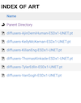
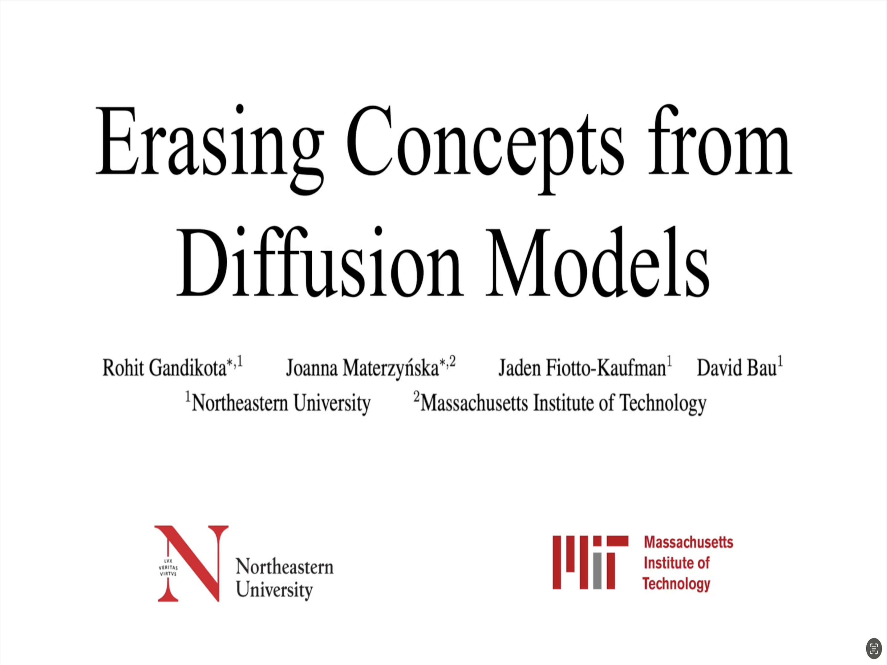
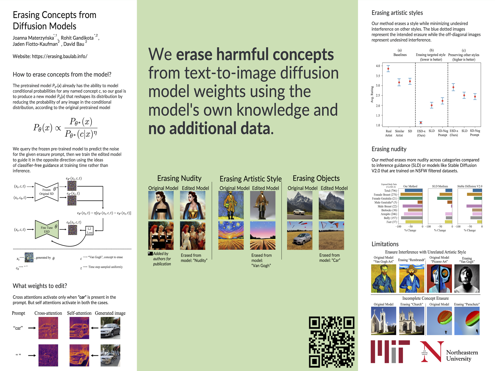

Preprint
 Source Code
Source CodeGithub  Fine-Tuned
Model Weights
 Huggingface
HuggingfaceDemo  ICCV
Demo  ICCV
Poster
How to erase concepts from unified autoregressive weights?
With recent advancements in image generation quality, there is a growing concern around safety, privacy, and copyrighted content in diffusion-model-generated images. Recent works attempt to restrict undesired content via inference-time interventions or post-generation filtering, but such methods often fail when users have direct access to model weights or can bypass constraints through adversarial prompts.
In this work, we introduce Janus-Pro, a method for fine-tuning diffusion models to erase concepts through self-guided patch realignment. Unlike traditional erasure techniques that suppress activations or retrain on censored data, Janus-Pro leverages the model's own knowledge to redirect representations of the target concept toward semantically related but permissible alternatives. Given only the text descriptor of the concept to be erased, our method edits the model weights by iteratively aligning the target concept's latent patches with those of a substitute concept, effectively "repurposing" the erased concept's space in the model's autoregressive hierarchy. This approach offers two key advantages: (1) it is inherently harder to circumvent than inference-time methods, as it modifies the underlying weight distribution, and (2) it preserves generation quality for non-target concepts by minimizing interference through patch-wise optimization rather than global suppression.

Why erase concepts from autoregressive models?
Since large-scale autoregressive models such as Janus-Pro are trained to predict and reconstruct data sequences from vast datasets, they inherently learn to generate sensitive, copyrighted, or harmful content-from nudity and artistic styles to trademarked symbols. These capabilities pose escalating risks: their autoregressive nature enables step-by-step synthesis of deepfake porn, exacerbating consent violations; their iterative patch-based generation precisely replicates artistic styles, threatening creators' livelihoods; and their latent space memorization regurgitates copyrighted content without attribution. For institutions deploying such models, these risks carry legal, ethical, and financial consequences.
Existing inference-time filters or post-hoc checks fail in autoregressive settings users can bypass them by exploiting incremental generation or adversarial prompts. Janus-Pro addresses this by editing the model's autoregressive weight dynamics : we permanently erase concepts by realigning their latent patches toward neutral substitutes during each generation step. This disrupts the model's ability to reconstruct undesired sequences while preserving fidelity for other content-all via lightweight fine-tuning.
How to erase concepts from a model?
We leverage the model's own autoregressive knowledge to selectively unlearn concepts. Rather than gathering external datasets or manually filtering training data, we utilize the model's existing patch-based representations to guide concept removal.
The approach is elegant yet effective: the pretrained autoregressive model Pθ*(x) already encodes rich hierarchical relationships between concepts c, so we transform it into Pθ(x) by redirecting target concept patches toward semantically similar but permissible alternatives:

This builds upon principles from compositional energy-based models, but implements them through patch realignment in the autoregressive framework. Instead of subtracting concept-conditioned components, we progressively nudge the model's attention mechanisms away from undesirable concept patches during generation.
We utilize the frozen pre-trained model's patch representations to identify the target concept's latent patterns, then train the edited model to redirect these patches toward alternative concepts using classifier-free guidance principles during training rather than inference. This patch realignment approach proves highly effective for autoregressive models, producing an edited generator that fundamentally restructures how the erased concept is represented in the model's hierarchical attention mechanisms.
Erase by three steps
We present a systematic approach for concept erasure in autoregressive models; our method decomposes the process into three distinct phases that progressively modify the model's internal representations. Through quantitative experiments, we compare our staged approach with single-step erasure methods including direct fine-tuning and gradient reversal techniques. We also measure the preservation of non-target concepts during each phase of the erasure process.
Erasing nudity
Since NSFW content can be generated through implicit contextual cues, we implement Janus-Pro's three-phase patching protocol to modify both conditioned and unconditioned model parameters. Our comparative analysis evaluates against inference-time filters (Safe Latent Diffusion) and pretrained censored models (Stable Diffusion v2.0/2.1), demonstrating superior concept dissociation while maintaining anatomical coherence.
Impact of Window Length on Concept Erasure
Our analysis reveals significant variations in erasure effectiveness across different concept categories when adjusting the autoregressive window size. Compared to baseline methods using fixed window lengths, our adaptive window approach demonstrates superior performance preservation. The study evaluates three distinct concept types: sensitive content (nudity), architectural elements (church), and artistic styles (Van Gogh).